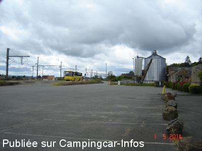
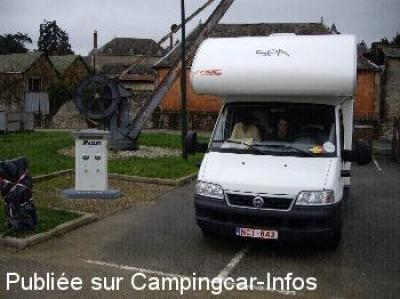

ASN = Aire de services avec stationnement nuit possible de :
SILLÉ LE GUILLAUME
(N° 499)
Accès/adresse :
Place de la Gare
72140 SILLÉ LE GUILLAUME
72140 SILLÉ LE GUILLAUME
Latitude : (Nord) 48.1817° Décimaux ou 48° 10′ 54′′
Longitude : (Ouest) -0.1313° Décimaux ou 0° 7′ 52′′
Tarif : 2010
Stationnement : gratuit
Services: 2 €
jeton:
- à l'Office du Tourisme
- à la maison du Lac
Services :


Tous commerces
Autres informations :
Aire ouverte toute l'année
Tel : +33 (0) 243 773 049
http://www.sille-le-guillaume.fr

Le 17/08/2014 par PC

Le 27/02/2007 par Jaak de Muelenaere
de
PC
le 17/08/2014 :
Not a particularly appealing enviroment but neverthe less perfectly acceptable to stay over night with other camping-cars alongside. The parking is huge so no problems finding an emplacement.
Not a particularly appealing enviroment but neverthe less perfectly acceptable to stay over night with other camping-cars alongside. The parking is huge so no problems finding an emplacement.
de
Rousée Albert
le 16/08/2010 :
Il est vrai que cet emplacement est tristounet, on a vraiment l'impression d'être parqué car coincé entre la voie de chemin de fer et la déchetterie de la ville. Nous avons préféré faire encore quelques kilomètres pour trouver mieux!
Il est vrai que cet emplacement est tristounet, on a vraiment l'impression d'être parqué car coincé entre la voie de chemin de fer et la déchetterie de la ville. Nous avons préféré faire encore quelques kilomètres pour trouver mieux!
de
Hirek
le 21/08/2007 :
Bonjour. N'avons pas du tout apprécié cette aire (bris de verre un peu partout) et d'une tristesse. On aurait dit les bas fonds d'une grande ville. Déplorable!
Avons préféré SILLE Plage pour depenser notre argent.
Cordialement
Bonjour. N'avons pas du tout apprécié cette aire (bris de verre un peu partout) et d'une tristesse. On aurait dit les bas fonds d'une grande ville. Déplorable!
Avons préféré SILLE Plage pour depenser notre argent.
Cordialement
de
le borgne
le 16/01/2007 :
La borne Raclet n'est plus gratuite, il faut des jetons, et elle est actuellement hors-gel sans date de remise en eau
La borne Raclet n'est plus gratuite, il faut des jetons, et elle est actuellement hors-gel sans date de remise en eau
de
soje27
le 07/08/2006 :
Ne vous embétez pas à dormir près de la gare, alors que si vous suivez Sillé Plage, vous serez au calme, en forêt et pas tous seuls (nombreux CC). En prime une très belle base de loisirs juste à côté. Attention parking payant si vous arrivez le dimanche (2€ seulement). A vous de voir...
Ne vous embétez pas à dormir près de la gare, alors que si vous suivez Sillé Plage, vous serez au calme, en forêt et pas tous seuls (nombreux CC). En prime une très belle base de loisirs juste à côté. Attention parking payant si vous arrivez le dimanche (2€ seulement). A vous de voir...